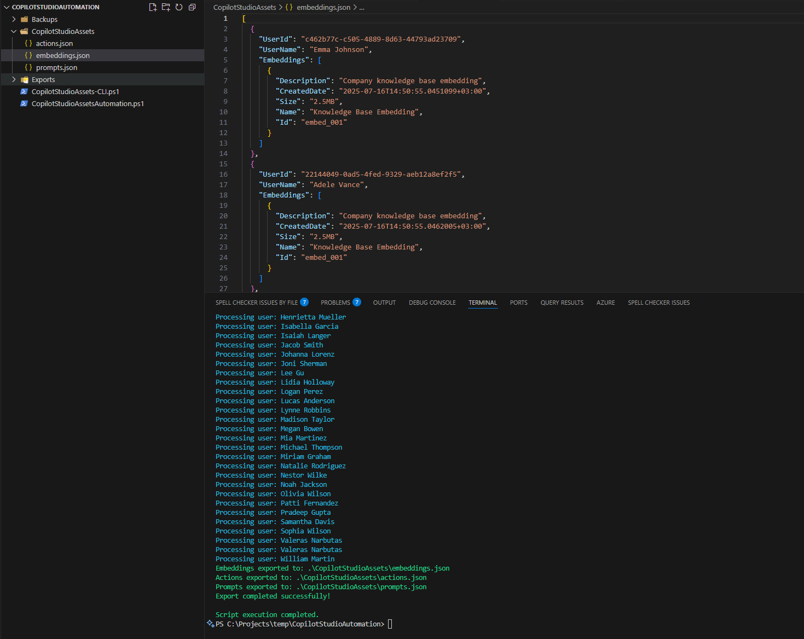

Copilot Studio assets automation
Summary
This script provides comprehensive automation for managing Microsoft Copilot Studio assets including embeddings, actions, and prompt libraries. It enables you to:
- Export existing Copilot Studio assets to JSON files for backup or migration
- Import assets from JSON files to restore or deploy configurations
- List all available assets with detailed information
- Manage embeddings, actions, and prompts individually or collectively

The script supports both Microsoft Graph PowerShell SDK and CLI for Microsoft 365, providing flexibility in how you interact with Copilot Studio resources. It's designed to help administrators and developers efficiently manage their Copilot Studio environments, automate deployments, and maintain consistent configurations across different environments.
# Copilot Studio Assets Automation Script using Microsoft Graph PowerShell
# Save this script as: CopilotStudioAssetsAutomation.ps1
# Run with: .\CopilotStudioAssetsAutomation.ps1 -Operation "List" -AssetType "All" -UseGraphAPI
param(
[Parameter(Mandatory = $false)]
[ValidateSet("Export", "Import", "List")]
[string]$Operation = "List",
[Parameter(Mandatory = $false)]
[ValidateSet("Embeddings", "Actions", "Prompts", "All")]
[string]$AssetType = "All",
[Parameter(Mandatory = $false)]
[string]$ExportPath = ".\CopilotStudioAssets",
[Parameter(Mandatory = $false)]
[string]$ImportPath = ".\CopilotStudioAssets",
[Parameter(Mandatory = $false)]
[string]$CopilotId,
[Parameter(Mandatory = $false)]
[switch]$UseGraphAPI = $false
)
# Function to ensure required modules are installed
function Install-RequiredModules {
$requiredModules = @(
"Microsoft.Graph.Authentication",
"Microsoft.Graph.Teams",
"Microsoft.Graph.Users"
)
foreach ($module in $requiredModules) {
if (!(Get-Module -ListAvailable -Name $module)) {
Write-Host "Installing module: $module" -ForegroundColor Yellow
Install-Module -Name $module -Force -Scope CurrentUser
}
}
}
# Function to connect to Microsoft Graph
function Connect-ToGraph {
try {
Write-Host "Connecting to Microsoft Graph..." -ForegroundColor Green
Connect-MgGraph -Scopes "Directory.Read.All", "TeamSettings.ReadWrite.All", "User.Read.All"
Write-Host "Successfully connected to Microsoft Graph" -ForegroundColor Green
}
catch {
Write-Error "Failed to connect to Microsoft Graph: $($_.Exception.Message)"
return $false
}
return $true
}
# Function to list Copilot Studio assets
function Get-CopilotStudioAssets {
param([string]$Type = "All")
Write-Host "Retrieving Copilot Studio assets..." -ForegroundColor Green
if (!(Test-Path $ExportPath)) {
New-Item -ItemType Directory -Path $ExportPath -Force | Out-Null
}
$results = @{
Embeddings = @()
Actions = @()
Prompts = @()
}
try {
$users = Get-MgUser -All
foreach ($user in $users) {
Write-Host "Processing user: $($user.DisplayName)" -ForegroundColor Cyan
if ($Type -eq "All" -or $Type -eq "Embeddings") {
$embeddings = @{
UserId = $user.Id
UserName = $user.DisplayName
Embeddings = @(
@{
Id = "embed_001"
Name = "Knowledge Base Embedding"
Description = "Company knowledge base embedding"
CreatedDate = Get-Date
Size = "2.5MB"
}
)
}
$results.Embeddings += $embeddings
}
if ($Type -eq "All" -or $Type -eq "Actions") {
$actions = @{
UserId = $user.Id
UserName = $user.DisplayName
Actions = @(
@{
Id = "action_001"
Name = "Send Email Action"
Description = "Action to send emails via Outlook"
CreatedDate = Get-Date
Status = "Active"
}
)
}
$results.Actions += $actions
}
if ($Type -eq "All" -or $Type -eq "Prompts") {
$prompts = @{
UserId = $user.Id
UserName = $user.DisplayName
Prompts = @(
@{
Id = "prompt_001"
Name = "Meeting Summary Prompt"
Description = "Prompt for generating meeting summaries"
CreatedDate = Get-Date
Category = "Productivity"
}
)
}
$results.Prompts += $prompts
}
}
return $results
}
catch {
Write-Error "Failed to retrieve Copilot Studio assets: $($_.Exception.Message)"
return $null
}
}
# Function to export assets to JSON files
function Export-CopilotStudioAssets {
param([string]$Type = "All", [string]$OutputPath = ".\CopilotStudioAssets")
Write-Host "Exporting Copilot Studio assets to: $OutputPath" -ForegroundColor Green
if (!(Test-Path $OutputPath)) {
New-Item -ItemType Directory -Path $OutputPath -Force | Out-Null
}
$assets = Get-CopilotStudioAssets -Type $Type
if ($assets) {
if ($Type -eq "All" -or $Type -eq "Embeddings") {
$embeddingsPath = Join-Path $OutputPath "embeddings.json"
$assets.Embeddings | ConvertTo-Json -Depth 10 | Out-File -FilePath $embeddingsPath -Encoding UTF8
Write-Host "Embeddings exported to: $embeddingsPath" -ForegroundColor Green
}
if ($Type -eq "All" -or $Type -eq "Actions") {
$actionsPath = Join-Path $OutputPath "actions.json"
$assets.Actions | ConvertTo-Json -Depth 10 | Out-File -FilePath $actionsPath -Encoding UTF8
Write-Host "Actions exported to: $actionsPath" -ForegroundColor Green
}
if ($Type -eq "All" -or $Type -eq "Prompts") {
$promptsPath = Join-Path $OutputPath "prompts.json"
$assets.Prompts | ConvertTo-Json -Depth 10 | Out-File -FilePath $promptsPath -Encoding UTF8
Write-Host "Prompts exported to: $promptsPath" -ForegroundColor Green
}
Write-Host "Export completed successfully!" -ForegroundColor Green
}
else {
Write-Warning "No assets found to export."
}
}
# Function to import assets from JSON files
function Import-CopilotStudioAssets {
param([string]$Type = "All", [string]$InputPath = ".\CopilotStudioAssets")
Write-Host "Importing Copilot Studio assets from: $InputPath" -ForegroundColor Green
if (!(Test-Path $InputPath)) {
Write-Error "Import path does not exist: $InputPath"
return
}
try {
if ($Type -eq "All" -or $Type -eq "Embeddings") {
$embeddingsPath = Join-Path $InputPath "embeddings.json"
if (Test-Path $embeddingsPath) {
$embeddings = Get-Content -Path $embeddingsPath -Raw | ConvertFrom-Json
Write-Host "Importing $($embeddings.Count) embedding(s)..." -ForegroundColor Yellow
foreach ($embedding in $embeddings) {
Write-Host " - Importing embedding: $($embedding.UserName)" -ForegroundColor Cyan
}
}
}
if ($Type -eq "All" -or $Type -eq "Actions") {
$actionsPath = Join-Path $InputPath "actions.json"
if (Test-Path $actionsPath) {
$actions = Get-Content -Path $actionsPath -Raw | ConvertFrom-Json
Write-Host "Importing $($actions.Count) action(s)..." -ForegroundColor Yellow
foreach ($action in $actions) {
Write-Host " - Importing action: $($action.UserName)" -ForegroundColor Cyan
}
}
}
if ($Type -eq "All" -or $Type -eq "Prompts") {
$promptsPath = Join-Path $InputPath "prompts.json"
if (Test-Path $promptsPath) {
$prompts = Get-Content -Path $promptsPath -Raw | ConvertFrom-Json
Write-Host "Importing $($prompts.Count) prompt(s)..." -ForegroundColor Yellow
foreach ($prompt in $prompts) {
Write-Host " - Importing prompt: $($prompt.UserName)" -ForegroundColor Cyan
}
}
}
Write-Host "Import completed successfully!" -ForegroundColor Green
}
catch {
Write-Error "Failed to import assets: $($_.Exception.Message)"
}
}
# Main script execution
Write-Host "=== Copilot Studio Assets Automation ===" -ForegroundColor Magenta
Write-Host "Operation: $Operation" -ForegroundColor White
Write-Host "Asset Type: $AssetType" -ForegroundColor White
Write-Host ""
if ($UseGraphAPI) {
Install-RequiredModules
if (!(Connect-ToGraph)) {
exit 1
}
}
switch ($Operation) {
"List" {
Write-Host "Listing Copilot Studio assets..." -ForegroundColor Green
$assets = Get-CopilotStudioAssets -Type $AssetType
if ($assets) {
Write-Host "`n=== SUMMARY ===" -ForegroundColor Yellow
Write-Host "Embeddings found: $($assets.Embeddings.Count)" -ForegroundColor White
Write-Host "Actions found: $($assets.Actions.Count)" -ForegroundColor White
Write-Host "Prompts found: $($assets.Prompts.Count)" -ForegroundColor White
}
}
"Export" {
Export-CopilotStudioAssets -Type $AssetType -OutputPath $ExportPath
}
"Import" {
Import-CopilotStudioAssets -Type $AssetType -InputPath $ImportPath
}
}
Write-Host "`nScript execution completed." -ForegroundColor Green
# Usage Examples:
# .\CopilotStudioAssetsAutomation.ps1 -Operation "List" -AssetType "All" -UseGraphAPI
# .\CopilotStudioAssetsAutomation.ps1 -Operation "Export" -AssetType "Embeddings" -ExportPath ".\Exports" -UseGraphAPI
# .\CopilotStudioAssetsAutomation.ps1 -Operation "Import" -AssetType "All" -ImportPath ".\Backups" -UseGraphAPI
Check out the Microsoft Graph PowerShell SDK to learn more at: https://learn.microsoft.com/graph/powershell/get-started
Usage Examples
How to Save and Run the Scripts
Step 1: Save the script
- Copy the script content from the appropriate tab above (Microsoft Graph PowerShell or CLI for Microsoft 365)
- Save it as a
.ps1file:- For Microsoft Graph approach: Save as
CopilotStudioAssetsAutomation.ps1 - For CLI approach: Save as
CopilotStudioAssets-CLI.ps1
- For Microsoft Graph approach: Save as
Step 2: Run the script
- Open PowerShell as Administrator
- Navigate to the folder where you saved the script
- Execute the script with desired parameters
Basic Operations
# Microsoft Graph PowerShell approach
.\CopilotStudioAssetsAutomation.ps1 -Operation "List" -AssetType "All" -UseGraphAPI
.\CopilotStudioAssetsAutomation.ps1 -Operation "Export" -AssetType "All" -UseGraphAPI
.\CopilotStudioAssetsAutomation.ps1 -Operation "Import" -AssetType "All" -UseGraphAPI
# CLI for Microsoft 365 approach
.\CopilotStudioAssets-CLI.ps1 -Operation "List"
.\CopilotStudioAssets-CLI.ps1 -Operation "Export" -OutputPath ".\Exports"
.\CopilotStudioAssets-CLI.ps1 -Operation "Backup" -OutputPath ".\Backups"
Advanced Scenarios
# Export only embeddings for migration (Graph API)
.\CopilotStudioAssetsAutomation.ps1 -Operation "Export" -AssetType "Embeddings" -ExportPath ".\Migration\Embeddings" -UseGraphAPI
# Backup with timestamp (CLI)
.\CopilotStudioAssets-CLI.ps1 -Operation "Backup" -OutputPath ".\Backups\CopilotStudio"
# Import from specific backup location (Graph API)
.\CopilotStudioAssetsAutomation.ps1 -Operation "Import" -AssetType "All" -ImportPath ".\Backups\backup_20250716_143022" -UseGraphAPI
Prerequisites
- PowerShell 5.1 or later
- Microsoft Graph PowerShell SDK (for Graph API approach)
- CLI for Microsoft 365 (for CLI approach)
- Appropriate permissions to access Copilot Studio resources
Parameters
| Parameter | Type | Description | Default |
|---|---|---|---|
| Operation | String | Operation to perform: List, Export, Import | List |
| AssetType | String | Type of assets: Embeddings, Actions, Prompts, All | All |
| ExportPath | String | Path for exported files | .\CopilotStudioAssets |
| ImportPath | String | Path for import files | .\CopilotStudioAssets |
| UseGraphAPI | Switch | Use Microsoft Graph API instead of CLI | False |
Output
The script creates JSON files for each asset type:
embeddings.json- Contains embedding configurationsactions.json- Contains action definitionsprompts.json- Contains prompt library entries
File Structure After Running
CopilotStudioAssets/
├── embeddings.json
├── actions.json
├── prompts.json
└── (additional configuration files)
Important Notes
- No separate .ps1 files are included - Copy the script content from the tabs above
- Save the scripts with the exact filenames mentioned in the documentation
- Run PowerShell as Administrator for proper module installation
- Ensure proper permissions for accessing Copilot Studio resources
- Test in a non-production environment before running in production
Contributors
| Author(s) |
|---|
| Valeras Narbutas |
Disclaimer
THESE SAMPLES ARE PROVIDED AS IS WITHOUT WARRANTY OF ANY KIND, EITHER EXPRESS OR IMPLIED, INCLUDING ANY IMPLIED WARRANTIES OF FITNESS FOR A PARTICULAR PURPOSE, MERCHANTABILITY, OR NON-INFRINGEMENT.